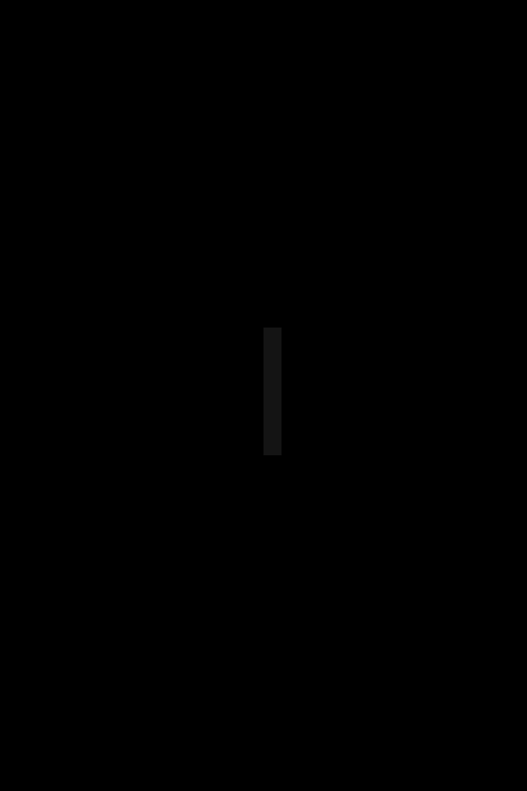
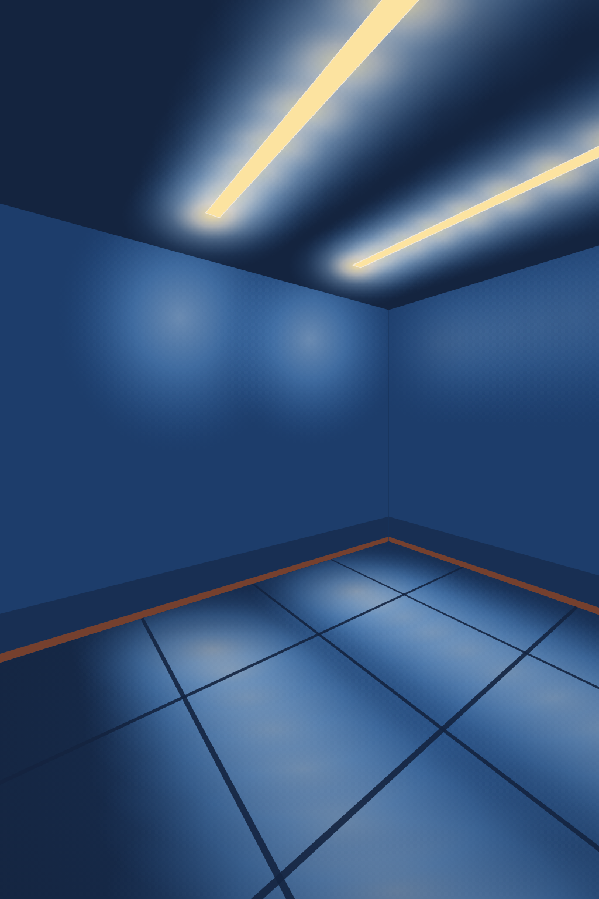
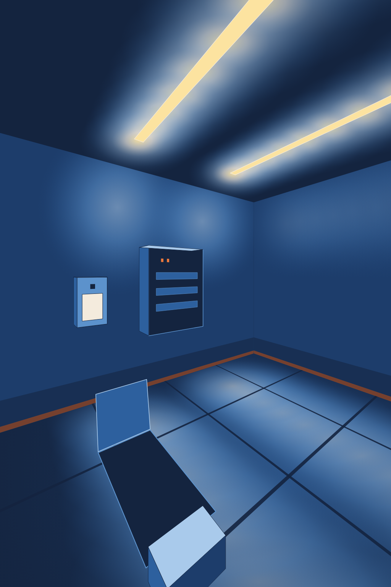
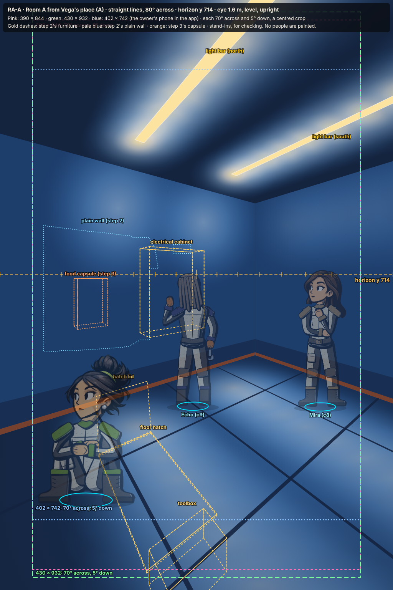
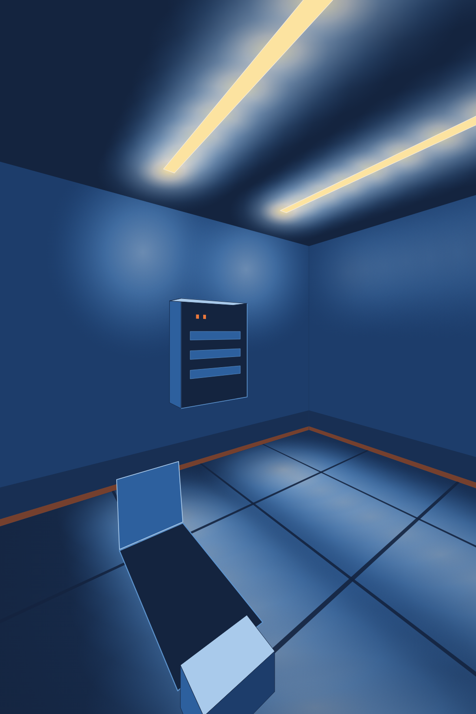
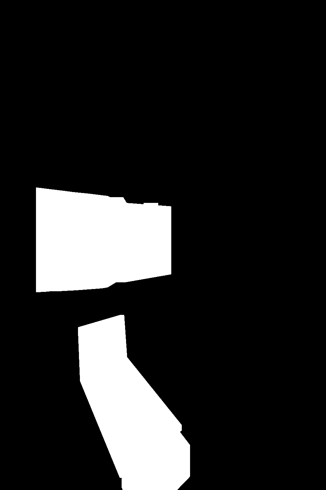
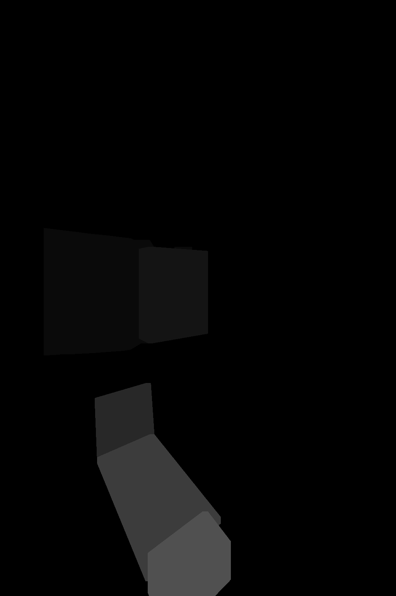
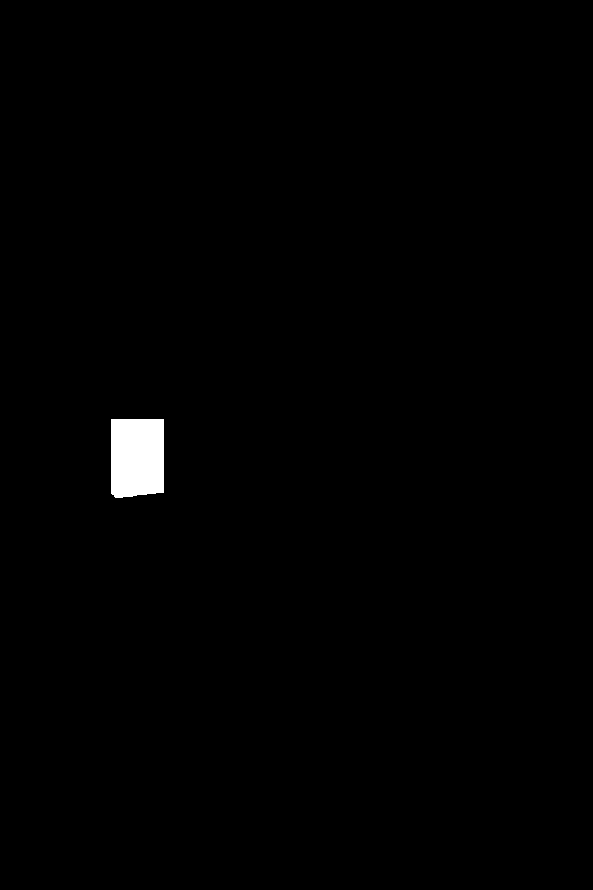

Sheet RA-A · Room A, view A
Version 7 · step 4 failed twice, so the cabinet’s right frame is drawn in code on RA-A-4 · for the Lead’s reviewRoom A’s first picture sheet: view A, from Vega’s place, painted the way Room B’s views were. Three pictures in three steps: the empty room, its furniture, then the food capsule. No people are painted, because code draws them. Every picture made from this sheet is AI-generated and recorded as such. Your reference pictures are never inputs: the only inputs are the code-drawn guides and masks on this page, and the pictures its own steps keep.
frameA.py), its record (frame-A.json) and two review pictures.What changed in version 6
What changed in version 4, the accepted version
featuresA.json), and every step-2 and step-3 mask edge covers each one with at least 15 px to spare or clears it by at least 15 px. The build measures it and stops if it fails. 11 of the 13 features in the test pass outright; two named exceptions are yours to decide (below).
- The cabinet is 0.88 m wide (was 1.1 m), its north side where it was, so it centres on Echo’s spot. It hangs 0.8 to 1.95 m up, 29 px clear of the pipe run and at least 27 px clear of its clamps. It has no door: folded south the door would end on the grille, folded north it would reach the food capsule. It clears the grille by 15 px.
- The hatch’s lid is 0.48 m long (was 0.6 m), so its top stays 20 px under the pipe run. Raised less, it hardly moves in the picture: at 65° its top lies within 3 px of where it is at 80°. The lid and the cabinet are 114 px apart.
- The plain-wall area keeps the locker bank and the panels beside it, and adds a small patch above the cabinet’s top so the papers’ clip is covered with 15 px to spare. The grille is no longer repainted.
- Nothing else on the floor plan moved: the five views’ layout checks and the five camera reports are as before. Step 1’s files are byte for byte version 1’s.
What changed in version 3
Fitted to RA-A-1, the AI-generated step-1 picture, whose wall carries painted lockers, panels, papers, a grille and two junction boxes. Step 2's mask gains the plain-wall area (plainA.json, 8.4% of the picture): the locker bank, the panels beside it and below it, the small square panel and the grille are repainted as plain steel wall, so that no locker door, seam or handle runs into the food capsule (step 3's mask lies 49 px inside that area) and the cabinet's door no longer ends on the grille. The area is its own background piece in the split map (grey 10, "back plain wall"), and step 2's text names it in one sentence. The cabinet's top is 0.15 m lower, at 1.95 m (its door's at 1.93 m), so that its top edge stays 15 px clear of the riveted plate RA-A-1 painted above it; its foot, the floor plan, the five views' layout checks and the five camera reports are as before. Every step-2 and step-3 mask edge was tested against RA-A-1's painted features (featuresA.json): each feature in the test lies wholly inside a mask or at least 15 px clear of it, with one exception for the Lead's decision, the locker bank's foot (see checks.featureTest.exceptions). Inside less than 15 px: square panel 4 px inside, papers 7 px inside, grille 3 px inside.
What changed in version 2
The electrical cabinet and its folded door are mounted 0.2 m higher, 0.65 to 2.1 m above the deck (version 1: 0.45 to 1.9 m), so that in this view the hatch's lid stands clear of them: 51 px between the two shapes (version 1: 10), 39 px between their grown outlines (version 1: 0), and step 2's mask in 2 areas (version 1: 1). Nothing on the floor plan moved: the five views' layout checks and the five camera reports are as before.
The cabinet’s right frame, drawn in code
RA-A-4 (sha256 63c0ca59e2caf52d4082bffbb977b50c63ed4dea5e1302a7ef642c2fbb914500) stays view A’s picture. Code draws the frame into the cabinet: a steel post down its right side that matches the painted left frame, its colours sampled from it. Around the second orange light the post is cut away, so the light stays whole as painted. Outside the new edge, the soft fade that step 2 left is cleaned to the wall’s own paint: RA-A-1’s pixels, the picture the lift starts from.


The post
- Where
- x 527–537, y 639–880. The outer edge is at x 537, 15 px clear of the grille at x 553; the inner edge is at x 527, over the cables’ run. 11 px wide, it is slightly thinner than the left frame. It closes the top bar’s right end at the top and the bottom frame’s corner at its foot.
- Like the left frame
- Mirrored, as measured on RA-A-4: the ink outline outside (rgb 6, 18, 41), on its right, top and bottom, the outer corners rounded at 3 px; the left frame’s steel blue (rgb 31, 68, 109) with that frame’s own grain, kept away from its stencilled letters; the light top edge (rgb 150, 157, 173, row 641); and the darker inner edge (rgb 18, 39, 69, x 527), with the left frame’s lighter column beside it.
- Rivets
- Three, top, middle and bottom, at y 683.5, 765.5, 871.5 (radius 3.2 px), coloured as the left frame’s. The bottom one is level with the left frame’s.
- The second light
- The post is cut away at x 527–534, y 654–668, and keeps only x 535–537 there. The light and its rim, 284 px, are unchanged.
- The foot
- The bottom frame’s ledge (rows 859–865) meets the post’s inner edge. Below it the post stands against the wall, and its inner side takes the ink outline.
- The wall
- x 538–546 on the cabinet’s rows is RA-A-1’s, pixel for pixel. RA-A-4 differed from it there only in rows 643–862, and equals it from x 542.
- The layer
- The cabinet’s step-2 layer gets the same post. Over RA-A-1 it gives the plate exactly, on the post and on the cleaned wall.
Checks
| Only the strip changes: 3,609 px, x 527–542, y 639–880. Everything left of x 527, and right of x 546, is RA-A-4’s. | pass |
| The second orange light is whole: its 284 px are unchanged. | pass |
The 15 px rule, measured as step 4’s frame4 measures it: the outer edge at x 537, 15 px clear of the grille (x 537 or less wanted). | pass |
| The wall outside the post is RA-A-1’s, pixel for pixel. | pass |
| The cabinet’s layer over RA-A-1 gives the plate. The largest difference is 0 on the post and the cleaned wall, and 1 in the whole strip, where the post’s edges blend. | pass |
python3 -I frameA.py <records folder> # reads img/RA-A-4.png, img/RA-A-1.png and img/RA-A-3-C-electrical-cabinet.png there, each by its sha256 # writes ra-A-4-frame.png (the plate), ra-A-cabinet-frame.png (the cabinet's layer) and frame-A.json
| Output | Pixels sha256 | File sha256, as written here |
|---|---|---|
ra-A-4-frame.pngthe plate: RA-A-4, AI-generated, with the code-drawn frame | 8f8d90c7a8ffabe55c7ed075a2979d445d07423ce0818a4f6eae5c5218877b90 | e7a218c924cc228efc3e019f4c9ca966d63208687b0ee927678769ba6d9460d4 |
ra-A-cabinet-frame.pngthe cabinet's step-2 layer with the frame drawn into it (RGBA) | 09aeafd98029dd6fcf15eceb98b04bb5c94070cc757dc24e53f42277a7898da0 | 7e07daae05939ca8f3ca0e46a21ac8fb647694223ecc43494a2b2eb85e95630c |
pixelsSha256 is of the decoded pixels (8-bit RGB or RGBA, row by row), which another Pillow writes the same; the PNG files' own sha256 may differ with another Pillow or zlib. The plate is not on this page. Once the Lead accepts it, it goes to the room data page and the owner page.
Step 4’s two tries
| Picture | Frame edge | Clear of the grille | sha256 |
|---|---|---|---|
| RA-A-5 | x 546 | 6 px | abee8d08a0ceead3e72d1d8aebcd3f819ee1e12b8c7290b6a5486e78c0b17cfa |
| RA-A-6 | x 544 | 8 px | 489db1882757121e3fde5c3931ee2f3629c3109c57dc7c31f17ec284a0ff047d |
As the image session’s frame4 records give them. Both pictures are AI-generated and kept with those records. Neither is used.
Step 4 · the cabinet’s right side
Tried twice, RA-A-5 and RA-A-6, and both failed: the frame is drawn in code instead (above). This section is version 6’s, unchanged.
RA-A-3 painted the cabinet’s frame down its left side and along its bottom, but not its right: its top bar, with the second orange light, and the breaker rows’ cables fade softly into the wall. Step 4 is one masked edit of RA-A-4, the accepted step-3 picture (sha256 63c0ca59e2caf52d4082bffbb977b50c63ed4dea5e1302a7ef642c2fbb914500), inside a narrow mask at that side, with the Lead’s short prompt. The input is the picture itself, with no guide in it, and there is no second picture.


The mask
- Where
- x 512–546, y 636–883: 8,680 px, 0.55% of the picture (
img/ra-A-place4.png, white = repaint) - Left edge
- Just inside the breaker rows’ right ends, which are at x 515.
- Right edge
- 15 px past the cabinet’s outline (x 531), on plain wall, 6 px short of the grille’s seam (x 553).
- Height
- The cabinet’s full height, with room for its frame’s corners. Its foot is 15 px above the pipe run.
- The second light
- 168 of its 176 px are inside the mask, and the prompt keeps it whole.
- Gaps
- the pipe run 15 px; the pipe clamp, middle 16 px; the pipe clamp, right 15 px; the grille 6 px; the pipes above 29 px (noted, not tested); the riveted plate and ledge 6 px (noted, not tested). The papers and the two panels behind the cabinet were painted over in step 2 and are not in RA-A-4.
- The 15 px rule
- It is for the new frame’s edge, as the Lead set it: its outer edge at x 537 or less, 15 px from the grille.
ra2_tools.py frame4measures it on the rows beside the grille (y 705 to 861): a pixel departs from the wall when its brightness (the mean of R, G and B) is more than 35 from the median of the unchanged wall just outside the mask in its row (x 547 to 552, five rows); the frame's outer edge is the rightmost column of the mask in which at least half of those rows depart, so that a vertical frame counts and the wall's seams, scratches and clamp tips, which cross few rows, do not. On RA-A-4 as it is, it reads x 537, the cables’ outer edge. The mask’s wall beyond that is there so that the frame’s outline and the wall meet cleanly. - The lift
- The cabinet’s layer is refreshed: the Lead’s recipe on RA-A-1 and the step-4 picture, inside the cabinet’s step-2 split area with step 4’s mask (44,838 px, 3,052 of them new).

python3 -I ra2_tools.py check python3 -I ra2_tools.py s4 A RA-A-4.png RA-A-5 # RA-A-4.png: sha256 63c0ca59e2caf52d4082bffbb977b50c63ed4dea5e1302a7ef642c2fbb914500 # the image tool edits RA-A-5-S4-input.png with RA-A-5-S4-mask.png (alpha 0 = repaint) and the step-4 prompt python3 -I ra2_tools.py keep4 A RA-A-4.png RA-A-5-raw.png RA-A-5.png python3 -I ra2_tools.py lift4 A RA-A-1.png RA-A-5.png RA-A-5 # RA-A-1.png: sha256 a565b6e01dec5a51fcedca90ace0331e657c09864411eba032cbe14021d4d635 python3 -I ra2_tools.py frame4 A RA-A-5.png RA-A-5 python3 -I ra2_tools.py colours A 4 RA-A-5.png RA-A-5
Step 4: the prompt, 1,772 characters · sha256 23314e9d4c0d6e88…
Create an illustrated science-fiction world with convincing three-dimensional depth and a hand-inked graphic-novel finish. Use strong silhouettes, expressive outlines, textured shadows and worn materials. Build environments from layered machinery, exposed pipes, suspended cables, overlapping panels and objects that suggest everyday use and repair. Organize dense detail around clear focal points. Use controlled colour palettes with warm luminous accents against cool shadow, giving each location its own atmosphere. The world should feel active, inhabited and larger than the visible frame, with layered depth, while the composition stays clear. Overall: lived-in, cyber, illustrated science fiction, lit and readable: warm lamplight against cool blue-steel shadow, dark only in the corners. This is a still picture and code adds the motion, so paint everything crisply: no motion blur, no lens blur, no film grain. This is a correction of the attached picture. Repaint only the masked area, and leave everything outside it exactly as it is. The masked area holds the right side of the open electrical cabinet on the back wall. The cabinet's heavy steel frame continues down its right side and closes the right end of its top bar, matching its left side, with rivets and a crisp drawn outline. The second orange light stays whole, inside the frame. The wall to its right stays unchanged. No people, and no words, letters or logos. Leave screens plain for the game to fill: openings marked black in the guide stay flat black and empty. No figures, faces, hands, silhouettes or animals; no signs, symbols or readable screens (any label is blank or abstract marks); no buttons or panels that look like game controls; no emblems, insignia, signature, watermark or border.
sha256 23314e9d4c0d6e88ca4d02ec2cdd8a0daff46c3bcc5119e07f2199ea93030471, of the text in UTF-8, as room-a-ra-a-s4-prompt.txt gives it. The colour block is left out: it speaks of a guide, and step 4’s input has none.
Checked against RA-A-1
This section is version 4’s check, as the Lead accepted it at 12:59, with both named exceptions accepted as built.
RA-A-1 is step 1’s picture, made by the image tool and recorded as AI-generated. These review overlays draw this version’s masks over it. Gold is step 2’s mask edge. Orange is step 3’s. The pale blue tint is the plain-wall area. Green outlines are painted features covered by a mask, cyan ones are clear of it, and magenta ones carry a named exception. White dots are features noted but not tested (pipes and the rail), and pink boxes are the four small lights. The overlays are for review only: never an input, never an asset.


At the three phones


The 15 px rule
Every step-2 and step-3 mask edge either clearly overlaps a feature in the test, covering it with at least 15 px to spare, or clears it by at least 15 px (square pixels): no part of the feature lies within 15 px of a mask edge. A named exception, for the Lead's decision, passes only where every such part lies in its zone. The features not in the test are measured and reported. Each feature was measured on RA-A-1 (featuresA.json). Features covered by step 2’s mask are repainted there, so step 3 meets plain wall.
| Painted feature | Kind | Step 2’s mask | Step 3’s mask | Result |
|---|---|---|---|---|
| pipe run | pipes | clear by 19 px | clear by 60+ px | pass |
| pipe clamp, left | clamp | clear by 15 px | clear by 60+ px | pass |
| pipe clamp, middle | clamp | clear by 27 px | clear by 60+ px | pass |
| pipe clamp, right | clamp | clear by 30 px | clear by 60+ px | pass |
| locker bank | lockers | crosses an edge (63,364 px inside) | clear by 53 px | your call |
| grille | grille | clear by 15 px | clear by 60+ px | pass |
| junction box, upper | box | clear by 17 px | clear by 60+ px | pass |
| junction box, lower | box | clear by 15 px | clear by 60+ px | pass |
| junction box, south wall | box | clear by 60+ px | clear by 60+ px | pass |
| junction box, far right | box | clear by 60+ px | clear by 60+ px | pass |
| papers: clip | papers | covered, 15 px to spare | repainted in step 2 | pass |
| papers: large sheet | papers | covered, 19 px to spare | repainted in step 2 | pass |
| papers: small sheet | papers | covered, 13 px to spare | repainted in step 2 | your call |
| rail above the lockers | rail | clear by 4 px | clear by 60+ px | noted |
| pipes above | pipes | clear by 17 px | clear by 60+ px | noted |
| riveted plate and ledge | panel | clear by 12 px | clear by 60+ px | noted |
| narrow panel | panel | covered, 16 px to spare | repainted in step 2 | noted |
| lower panel | panel | covered, 38 px to spare | repainted in step 2 | noted |
| square panel | panel | crosses an edge (2,483 px inside) | clear by 60+ px | noted |
| corner pipes | pipes | clear by 60+ px | clear by 60+ px | noted |
| left pipe | pipes | clear by 15 px | clear by 60+ px | noted |
Every piece against every feature
Each piece’s own area, measured against each painted feature within 60 px of it. A star marks a feature noted but not on your list. The plain-wall patch sits just above the papers and covers them only together with the cabinet below it, so its own small gaps to them do not count: together they cover the clip with 15 px to spare and the large sheet with 19 px, as the table above gives.
| Piece | Gaps to the painted features near it |
|---|---|
| Plain-wall area (as drawn) | pipe run: clear by 19 px; pipe clamp, left: clear by 15 px; locker bank: crosses an edge (63,364 px inside); grille: clear by 56 px; junction box, upper: clear by 17 px; junction box, lower: clear by 15 px; papers: clip: crosses an edge (144 px inside); papers: large sheet: clear by 1 px; rail above the lockers*: clear by 4 px; pipes above*: clear by 17 px; riveted plate and ledge*: clear by 12 px; narrow panel*: covered, 13 px to spare; lower panel*: crosses an edge (3,840 px inside); square panel*: crosses an edge (294 px inside); left pipe*: clear by 15 px |
| Hatch lid (grown 6 px) | pipe run: clear by 20 px; pipe clamp, left: clear by 28 px; junction box, lower: clear by 39 px |
| Floor hatch (grown 6 px) | every feature 60+ px clear |
| Electrical cabinet (grown 6 px) | pipe run: clear by 29 px; pipe clamp, left: clear by 28 px; pipe clamp, middle: clear by 27 px; pipe clamp, right: clear by 30 px; locker bank: clear by 21 px; grille: clear by 15 px; papers: clip: covered, 8 px to spare; papers: large sheet: covered, 19 px to spare; papers: small sheet: covered, 13 px to spare; rail above the lockers*: clear by 29 px; pipes above*: clear by 22 px; riveted plate and ledge*: clear by 16 px; narrow panel*: crosses an edge (2,269 px inside); lower panel*: crosses an edge (4,720 px inside); square panel*: crosses an edge (2,483 px inside) |
| Toolbox (grown 6 px) | every feature 60+ px clear |
| Food capsule, step 3 (grown 2 px) | locker bank: crosses an edge (12,139 px inside); narrow panel*: clear by 54 px; lower panel*: clear by 58 px |
Noted, not on your list: the rail above the lockers is 4 px from the plain wall’s top edge, as only 12 to 14 px of plain wall separate it from the lockers. The patch above the cabinet passes 12 px under the riveted plate’s ledge. The cabinet’s foot crosses the small square panel, whose lower part stays in view below it. Everything else is at least 15 px from every edge.
The four small lights
For the Motion builder, if it wants a soft glow in code: small light, far right at x 940–967, y 526–538; the junction box's light at x 236–254, y 550–558; small light, lower right at x 704–713, y 790–794; the lower junction box's light at x 174–190, y 970–977 (painting pixels). None is inside a mask: the nearest is 39 px from step 2’s.
The picture
As Room B’s PV6 views: 1024 × 1536, straight lines, 80° across (focal 610.2 px), level, the horizon 714 px from the top. The camera is at Vega’s place by the north wall, at eye height (1.6 m), facing 126.4° (south-east). Each phone’s 70° slice, 5° down, is a centred crop of the painting, so one picture serves all three phones. The ceiling is solid, as you approved: the two light bars, and no window in this view. The east wall is the back wall and the south wall is on the right.



What each phone shows


The three steps
The image session names each picture RA-A-1, RA-A-2 and so on in the order it makes them, as Room B’s are named. The Lead gives each step’s go, naming this sheet’s version and hashes, and accepts each picture before the next step starts. All commands run from the sheet’s folder with NumPy and Pillow, and the tool stops if any file is not the sheet’s.
Step 1 · the empty room
- Input
img/ra-A-empty.png, with no mask and no second picture- Size
- 1024 × 1536, one picture
- Check
- The colour check with the empty room’s map, and the lines against the annotated guide: the horizon at 714, every vertical upright, the corner and floor seams where the guide puts them
python3 -I ra1_tools.py check python3 -I ra1_tools.py s1 A RA-A-1 python3 -I ra1_tools.py colours A 1 RA-A-1.png RA-A-1
Step 1: the prompt, 4,278 characters · sha256 f13dcb963c482621…
Create an illustrated science-fiction world with convincing three-dimensional depth and a hand-inked graphic-novel finish. Use strong silhouettes, expressive outlines, textured shadows and worn materials. Build environments from layered machinery, exposed pipes, suspended cables, overlapping panels and objects that suggest everyday use and repair. Organize dense detail around clear focal points. Use controlled colour palettes with warm luminous accents against cool shadow, giving each location its own atmosphere. The world should feel active, inhabited and larger than the visible frame, with layered depth, while the composition stays clear. Overall: lived-in, cyber, illustrated science fiction, lit and readable: warm lamplight against cool blue-steel shadow, dark only in the corners. This is a still picture and code adds the motion, so paint everything crisply: no motion blur, no lens blur, no film grain. Room A, the crew bay, in the same illustrated world: blue steel, lit warm. The whole room is one blue-steel family, the colours of the attached guide: deep navy in the shadows and corners (#14243F, #1D3D6B), steel blue on the walls and the deck (#2D609E), turning paler where the light falls (#5C92CC, #A9CAEB). The light is warm: the two light bars glow cream along their length (#FCE3A0), with a warm paper-white glow (#F4EBDD) on the ceiling around them and soft pools of pale light on the deck below. Walls, panels, pipes, cables and deck plates take their colour from that family; worn edges, rivets and plate seams show a little rust (#75402E); nothing is neutral grey, and nothing is tan, beige, olive, purple or violet. The shadows are deep navy, never black-brown or grey. Labels and paper are blank, in a warm paper white (#F4EBDD). Small indicator lights are warm orange (#EC793C); no other coloured light, and no green, purple or red light. Practical and worn, a working bay, quiet but lived in. The guide is the room's colour plan: paint over it in full detail and texture, but keep its colours and where its light falls. The room: Room A, the crew bay, a 4 m square room with a 3 m ceiling, here with no furniture in it. The ceiling is solid steel panels, with no skylight and no opening in it: two long light bars set into it run across the room about 1.4 m apart, each glowing warm cream along its whole length behind a plain diffuser, lighting the ceiling around it and throwing soft pools of light on the deck below. The walls are steel panels, pipes, conduits, cable runs and small lockers, worn and repaired, darker toward the deck, with a narrow rust-brown kick strip along their foot; the deck is metal plates with seams, scuffs and a little rust, lit pale under the light bars and darker toward the corners. No beams, rays or shafts of light in the air. View: a straight-lined view at standing eye height, exactly as the attached guide shows: 80 degrees across and level, every vertical line perfectly straight and upright, every straight line in the room straight in the picture. The horizon, at eye level, is a straight line 714 px from the top, a little above the middle. Match the guide's layout, perspective, horizon and proportions exactly, line for line, as its floor seams, wall bases, corners and ceiling edges show. Do not curve the lines, tilt the view, zoom in or out, or move the horizon. This picture: from a place by the north wall, west of its middle, at standing eye height, looking diagonally across the room toward its south-east corner, which stands right of the middle. Ahead and on the left, the east wall; on the right, past the corner, the south wall. Above, the solid ceiling, with the two light bars running from its middle up to the right and out of the picture at its top and right edges, the nearer one higher. The deck is open and clear, with nothing standing on it, while the walls keep their pipes, panels and conduits. No people, and no words, letters or logos. Leave screens plain for the game to fill: openings marked black in the guide stay flat black and empty. No figures, faces, hands, silhouettes or animals; no signs, symbols or readable screens (any label is blank or abstract marks); no buttons or panels that look like game controls; no emblems, insignia, signature, watermark or border.
sha256 f13dcb963c482621a666267a2dea53b3f6a848a6b64dca32bb3fe6518401cfb4, of the text in UTF-8, as room-a-ra-a-prompts.txt gives it.
Step 2 · the furniture
One masked PLACE edit of RA-A-1, the step-1 picture, inside the furniture’s outlines grown 6 px and the plain-wall area (14.6% of the picture, in 2 areas). The input shows the step-2 guide there: the furniture without the capsule, and the wall’s colour plan where the plain wall goes. The kept edit is lifted into one layer a piece, for the people’s depth.



| Piece | Grey | Outline px | Lifted in the dry run | Why it is its own piece |
|---|---|---|---|---|
| plain wall | 10 | 76,485 | none, as expected | The back wall where RA-A-1 painted the locker bank and the panels beside it, and a small patch above the cabinet over the papers' clip, repainted as plain steel wall: a background piece, the farthest grey, so nothing of the lockers runs into the capsule. In the dry run the stand-ins are the same there, so it lifts nothing; only a real step-2 picture changes it. |
| hatch lid | 40 | 19,288 | 18,911 | The hatch's lid, 0.48 m long, raised almost upright at its far end: its own piece, as the Motion builder asked. |
| floor hatch | 60 | 50,038 | 49,124 | The open hatch in the deck, its near rim crisp and lit: code draws Lyra's hands and wrench going into it, so the rim is its own layer. |
| electrical cabinet | 20 | 36,794 | 37,538 | The open cabinet on the back wall, 0.88 m wide and 0.8 to 1.95 m up, with no door. Its cables are painted neatly bundled, none loose: code draws the wire Echo draws out. |
| toolbox | 80 | 32,001 | 34,394 | The closed toolbox beside the hatch's near end, cut off by the bottom edge. |
python3 -I ra1_tools.py s2 A RA-A-1.png RA-A-2 # RA-A-1.png: sha256 a565b6e01dec5a51fcedca90ace0331e657c09864411eba032cbe14021d4d635 # the image tool edits RA-A-2-S2-input.png with RA-A-2-S2-mask.png (alpha 0 = repaint) and the step-2 prompt python3 -I ra1_tools.py keep A RA-A-1.png RA-A-2-raw.png RA-A-2.png python3 -I ra1_tools.py lift A RA-A-1.png RA-A-2.png RA-A-2 python3 -I ra1_tools.py colours A 2 RA-A-2.png RA-A-2
Step 2: the prompt, 3,717 characters · sha256 261dd7da04bd86a0…
Create an illustrated science-fiction world with convincing three-dimensional depth and a hand-inked graphic-novel finish. Use strong silhouettes, expressive outlines, textured shadows and worn materials. Build environments from layered machinery, exposed pipes, suspended cables, overlapping panels and objects that suggest everyday use and repair. Organize dense detail around clear focal points. Use controlled colour palettes with warm luminous accents against cool shadow, giving each location its own atmosphere. The world should feel active, inhabited and larger than the visible frame, with layered depth, while the composition stays clear. Overall: lived-in, cyber, illustrated science fiction, lit and readable: warm lamplight against cool blue-steel shadow, dark only in the corners. This is a still picture and code adds the motion, so paint everything crisply: no motion blur, no lens blur, no film grain. Room A, the crew bay, in the same illustrated world: blue steel, lit warm. The whole room is one blue-steel family, the colours of the attached guide: deep navy in the shadows and corners (#14243F, #1D3D6B), steel blue on the walls and the deck (#2D609E), turning paler where the light falls (#5C92CC, #A9CAEB). The light is warm: the two light bars glow cream along their length (#FCE3A0), with a warm paper-white glow (#F4EBDD) on the ceiling around them and soft pools of pale light on the deck below. Walls, panels, pipes, cables and deck plates take their colour from that family; worn edges, rivets and plate seams show a little rust (#75402E); nothing is neutral grey, and nothing is tan, beige, olive, purple or violet. The shadows are deep navy, never black-brown or grey. Labels and paper are blank, in a warm paper white (#F4EBDD). Small indicator lights are warm orange (#EC793C); no other coloured light, and no green, purple or red light. Practical and worn, a working bay, quiet but lived in. The guide is the room's colour plan: paint over it in full detail and texture, but keep its colours and where its light falls. This is a correction of the attached picture. Repaint only the masked areas, and leave everything outside them exactly as it is. The two masked areas hold four pieces of furniture, each filling its own part exactly, painted in full detail in the picture's style and light. Ahead, in the upper area, mounted on the back wall about 0.8 m above the deck: a steel electrical cabinet, about 0.9 m wide and 1.15 m tall, with no door, its front open on rows of breakers and neatly bundled cables, every cable in its place and none hanging loose, with two small warm orange indicator lights near its top. The rest of the upper area, mostly to the cabinet's left, is plain wall: paint it as the same steel wall panels as the wall around it, with their seams, rivets and wear, and with nothing on them: no lockers, doors, vents, papers, boxes or panels. Lower, ahead and to the left, in the deck: an open hatch, a long rectangular opening about 1 m by 0.5 m with a raised steel rim all round, its near edge crisp and lit, showing a dark space beneath with pipes and cables; at its far end, on the left, its heavy steel lid, hinged along that edge and raised almost upright. At the bottom edge, nearest, cut off by it: a closed steel toolbox standing on the deck beside the hatch's near end. No people, and no words, letters or logos. Leave screens plain for the game to fill: openings marked black in the guide stay flat black and empty. No figures, faces, hands, silhouettes or animals; no signs, symbols or readable screens (any label is blank or abstract marks); no buttons or panels that look like game controls; no emblems, insignia, signature, watermark or border.
sha256 261dd7da04bd86a0d75a2ed6ec0a0fe606d733bab6b5597017f69e7f3eb67969, of the text in UTF-8, as room-a-ra-a-prompts.txt gives it.
Step 3 · the food capsule
One masked edit of the kept step-2 picture, inside the capsule’s outline grown 2 px (0.77% of the picture), with no furniture in it. The input shows the guide there. The capsule is Room A’s wall unit on its bracket, on the east wall 1 m north of its middle, 1.0 to 1.55 m up, with the front Room B’s unit was painted with, so the ship’s dispensers match. It is painted closed and unlit. Code draws its open hatch, its compartment, the tray, its light and the shutter over it, as in Room B.

python3 -I ra1_tools.py s3 A RA-A-2.png RA-A-3 # the image tool edits RA-A-3-S3-input.png with RA-A-3-S3-mask.png (alpha 0 = repaint) and the step-3 prompt python3 -I ra1_tools.py keep3 A RA-A-2.png RA-A-3-raw.png RA-A-3.png python3 -I ra1_tools.py lift3 A RA-A-2.png RA-A-3.png RA-A-3 python3 -I ra1_tools.py colours A 3 RA-A-3.png RA-A-3
Step 3: the prompt, 3,236 characters · sha256 0b5a2cf4ae811090…
Create an illustrated science-fiction world with convincing three-dimensional depth and a hand-inked graphic-novel finish. Use strong silhouettes, expressive outlines, textured shadows and worn materials. Build environments from layered machinery, exposed pipes, suspended cables, overlapping panels and objects that suggest everyday use and repair. Organize dense detail around clear focal points. Use controlled colour palettes with warm luminous accents against cool shadow, giving each location its own atmosphere. The world should feel active, inhabited and larger than the visible frame, with layered depth, while the composition stays clear. Overall: lived-in, cyber, illustrated science fiction, lit and readable: warm lamplight against cool blue-steel shadow, dark only in the corners. This is a still picture and code adds the motion, so paint everything crisply: no motion blur, no lens blur, no film grain. Room A, the crew bay, in the same illustrated world: blue steel, lit warm. The whole room is one blue-steel family, the colours of the attached guide: deep navy in the shadows and corners (#14243F, #1D3D6B), steel blue on the walls and the deck (#2D609E), turning paler where the light falls (#5C92CC, #A9CAEB). The light is warm: the two light bars glow cream along their length (#FCE3A0), with a warm paper-white glow (#F4EBDD) on the ceiling around them and soft pools of pale light on the deck below. Walls, panels, pipes, cables and deck plates take their colour from that family; worn edges, rivets and plate seams show a little rust (#75402E); nothing is neutral grey, and nothing is tan, beige, olive, purple or violet. The shadows are deep navy, never black-brown or grey. Labels and paper are blank, in a warm paper white (#F4EBDD). Small indicator lights are warm orange (#EC793C); no other coloured light, and no green, purple or red light. Practical and worn, a working bay, quiet but lived in. The guide is the room's colour plan: paint over it in full detail and texture, but keep its colours and where its light falls. This is a correction of the attached picture. Repaint only the masked shape, and leave everything outside it exactly as it is. The masked shape holds one small food dispenser that fills the shape exactly, with nothing of it outside the shape, painted in full detail in the picture's style and light. It is mounted on the back wall, on the left, on a bracket in the wall's own colours, at waist to chest height: a narrow upright steel housing about 0.32 m wide, 0.55 m tall and 0.22 m deep; a small round lens high on its front, unlit and dark; below it, a large closed hatch of warm paper-white filling most of the front, with a small dark handle along its bottom edge; no vent slots; nothing written, printed or lit on it. Paint it in the same metal, paint and wear as the furniture in the picture. No people, and no words, letters or logos. Leave screens plain for the game to fill: openings marked black in the guide stay flat black and empty. No figures, faces, hands, silhouettes or animals; no signs, symbols or readable screens (any label is blank or abstract marks); no buttons or panels that look like game controls; no emblems, insignia, signature, watermark or border.
sha256 0b5a2cf4ae811090374295fcc14d01f9e68aa02c76efca51c4354fcad45e33ba, of the text in UTF-8, as room-a-ra-a-prompts.txt gives it.
Checks on this sheet
The dry run
Every command of the tool, once, on the sheet’s own published files, with the code-drawn guides standing in for the image tool’s pictures. This shows that the files, the masks, the prompts and the lift agree with the manifest. It says nothing about a real picture.
| Every file and expected hash | pass |
| The three prompts as the manifest gives them | pass |
| Step 2’s mask: 14.61%, alpha as expected | pass |
| Step 3’s mask: 0.77%, alpha as expected | pass |
| A kept edit changes nothing more than 4 px outside its mask (steps 2 and 3) | pass |
| The lift: 4 pieces in step 2 and the capsule in step 3. The plain wall lifts nothing here, as expected: the stand-ins are the same there. | pass |
| The colour check on steps 1, 2 and 3 | pass |
| Step 4, with the tool’s version 2: every file and hash, the prompt as the kit gives it, the mask (0.55%) with its alpha as expected | pass |
| Step 4: the kept edit changes nothing more than 4 px outside its mask; the cabinet’s refreshed layer lifts (37,538 px with the stand-ins); the frame measure runs (x 532, the stand-in’s outline); the colour check passes | pass |
The colour check, version 1 for Room A
Room B’s colour check, version 4, with Room A’s blue steel in place of Room B’s violet. The base band is 233–275° (OKLCH), the tokens’ 248.5–260.3° with 15° either side. Room B’s warm light and wear are kept, and one gate is new: no purple, which is Room B’s colour. The guides pass every gate. Room B’s own empty-room guide, put through it, fails 3 of them, so it tells the two rooms apart.
| Gate | What it asks | Empty guide | Guide | Room B’s guide |
|---|---|---|---|---|
| walls and deck in the base | at least 60% of the wall and deck area: hue 233-275, chroma 0.035 or more, lightness 0.15 or more | pass | pass | fail |
| each wall and the deck in the base | at least 45% of each area on its own | pass | pass | fail |
| orange capped | at most 8% of the picture warm orange (hue 30-75, chroma 0.10 or more, lightness 0.60 or more) | pass | pass | pass |
| rust capped | at most 3% of the picture rust (hue 25-55, chroma 0.05-0.11, lightness 0.30-0.50) | pass | pass | pass |
| no tan or olive | at most 3% of the wall and deck area in hue 70-115 (chroma 0.035 or more, lightness 0.15-0.80) | pass | pass | pass |
| not purple | at most 3% of the wall and deck area in hue 285-355 (chroma 0.035 or more, lightness 0.15 or more): Room B's colours | pass | pass | fail |
| not grey | at most 15% of the wall and deck area neutral grey (chroma under 0.035, lightness 0.15 or more) | pass | pass | pass |
| median lightness | the median lightness of the wall and deck area between 0.28 and 0.60 | pass | pass | pass |
| accents only orange, cream, rust | at most 0.2% of the picture bright and saturated (lightness 0.55+, chroma 0.08+) outside hue 233-275 and 355-105 | pass | pass | pass |
| openings flat black | the window, where the view holds it: 95% of it under lightness 0.12 | pass | pass | pass |
Everything the image session receives
16 files, by their path on this page. The tool checks each one against the manifest before it uses it. Pass these names and hashes on with the go.
| File | Bytes | sha256 |
|---|---|---|
img/ra-A-empty.pngstep 1's input: the empty-room guide | 1,034,111 | 630d43ad9f54023e2fa506d9f0361ecfd3d69c961d58670cad45b9db3981a3f4 |
img/ra-A-empty-regions.pngthe colour check's map for step 1 | 12,016 | d4b415fda48bada87be7c46d5b274be48c8a36f4ed2877b60c84a3e754097028 |
img/ra-A-empty-annotated.pngfor checking the lines: the horizon, the phones' slices, where people stand | 1,298,656 | dddd8057b6e98b1d5ed8b67ec42effcd94eeab64387f18fe19d131ca8b303c67 |
img/ra-A-guide.pngthe guide with the furniture and the capsule: step 3's input inside its mask | 918,716 | 9b4a8b8b00f67d70ee19271f23012347d98ddd2118fcd4b092c38429db692c8d |
img/ra-A-guide-s2.pngthe guide with the furniture, without the capsule: step 2's input inside the PLACE mask | 969,571 | 77b4850fcbb34685b5bf37f75e8acdc3d145dd550713bf67f387dd300e53ecd0 |
img/ra-A-regions.pngthe colour check's map for steps 2 and 3 | 13,900 | b779718fb87388ca5b2ede5c8eefdbfd5cd8d39d13906518acf98b07e2d8eddb |
img/ra-A-place.pngstep 2's PLACE mask (white = repaint) | 3,632 | 67657b147a3778fc28358dfef4f4d39a07af8fad45fff4853a19cd16ce1c6bdc |
img/ra-A-split.pngstep 2's split map: one grey a piece, for the lift | 4,284 | b70352078678e2f6216c8f738438ae2388d07351d9137d43142d5f86b4df2711 |
img/ra-A-place3.pngstep 3's mask (white = repaint) | 1,829 | 3ea02a13cff100a89efff8e78290218e4c973ef09b17ba10317f8ad067baa95c |
img/ra-A-split3.pngstep 3's split map: the capsule's grey | 1,846 | 2e1593a314b6f57cf2151dc3a4289043db57df15df7e6e6b43e77d0dc6c94539 |
room-a-ra-a.jsonthe manifest: the kit the tool reads, the prompts, the expected hashes, the camera | 41,814 | 27cab8a2ef473b908020f340da839e9b49230792a44ffbdd0a6dc11a3ada7870 |
room-a-ra-a-prompts.txtthe three prompts, each with its sha256 | 12,515 | 32279e00ef39452972f055ad96eed4f8c199d706cb8914649c0ae19df8545c6a |
ra1_tools.pythe tool, version 1 (Room B's PV6 tool with step 3 and the colour check) | 13,453 | a1d3bbca594b0461735e75879bb1ab4b5f9d6ed177fffefc5d734395abcb63d2 |
lift5.pythe lift, the Lead's recipe (the same bytes as Room B's sheets') | 4,787 | aa3620e37f96906bc3d121a2f0c1490921db4a3ca0b60872ee4263b0a8d83eee |
colour-check-ra1.pythe Room A colour check, version 1 | 11,025 | c882f4f8259b44bf8d689021daa2e5b0e8f028539cc076cc457fe144f582dbd2 |
camera-report-A.jsonthe camera report, version 2 (the Room A plan's) | 6,694 | aa0084ec26d7fc471d00b55c8f7adefd89765bf2e9eaf3250ee29ad9037712fe |
Step 4’s files, added in version 6
The files above are version 4’s, unchanged, byte for byte. Step 4 adds these 5. ra2_tools.py checks each against room-a-ra-a-s4.json before it uses it, and that file names version 4’s manifest by its sha256.
| File | Bytes | sha256 |
|---|---|---|
img/ra-A-place4.pngstep 4's mask (white = repaint) | 1,925 | ff7c7046154234f5d1c3131fea3d47db1c65958bf0782e0e5d086ad6f4b659a9 |
img/ra-A-split4.pngstep 4's split map: the cabinet's grey, for its refreshed lift | 1,933 | 877694c2f8f89e8a8176b8a6f0e1f54a2da165f7a72cac3a6ea9e436b93d182d |
room-a-ra-a-s4.jsonstep 4's kit: the files, the prompt, the expected hashes, the start picture by name and hash, the measurements | 9,935 | 6fc6fe86bb58b2d84f4c32da8af63b5d390b90b4beec9d7d4fa7f38fda7e819a |
room-a-ra-a-s4-prompt.txtthe step-4 prompt, with its sha256 | 2,462 | fb5c3665d3041a7405fa25e027a9defc58d9f3f2bcfabd7b2e4115853c5682a2 |
ra2_tools.pythe tool, version 2: version 1's commands unchanged, with s4, keep4, lift4 and frame4 | 22,363 | 465cf7a88f84a2907d12b86417e4a3b4ad8e7214778267f7b89017a363662df3 |
The drawn frame’s files, added in version 7
Version 6’s files above are unchanged, byte for byte. Version 7 adds these two. frameA.py checks room-a-ra-a-s4.json, and each picture it reads, by its sha256.
| File | Bytes | sha256 |
|---|---|---|
frameA.pythe frame drawn in code: the post, the cut for the light, the rivets, the wall cleaned to RA-A-1, and the checks | 17,823 | f36a355928096147bc6f8bad5d932297d331541243fca6b51693b73f17bd9b02 |
frame-A.jsonits record: every number and colour, the checks, the two tries and each output’s sha256 | 5,514 | f30f52f55388fe5e3bf506a2865645f441f3b51de8f12b9b5b47e8b87273e4cb |
For this page only, and not received by the image session: the three phone crops (img/ra-A-phone-390.png, -430, -402), the nine review pictures (img/review/, AI-generated), and the test’s data (featuresA.json, plainA.json):
| File | Bytes | sha256 |
|---|---|---|
img/ra-A-phone-390.png | 159,194 | a6afb3162587ce6b6c4c68d4c7f7abc19a8bd22e7cc69b5ef9d85fda8d340342 |
img/ra-A-phone-430.png | 195,049 | cb2dc8d3e233cdb71b45bcf752dee6702cb466a2b14c63b0e38f15683eb4c79d |
img/ra-A-phone-402.png | 140,241 | 952b44b44249b14681bd41ae9c4a1c91f862201d0c62552ebf23a9aaf24f073c |
img/review/ra-A-review-full.png | 2,661,176 | 6d1c8059ba26b5561a0d2ed3f6773f857c9906f1e0832770349b6f986b77218e |
img/review/ra-A-review-wall.png | 1,168,600 | 0a98578c7c2d9b4c240133ade72f308ed26338b5c04130392e5be8485b5f7707 |
img/review/ra-A-review-390.png | 1,757,066 | bce0c92d7cd590ec91eabd4806d525080bc915343e6d3d6bd3b5637a14d82b79 |
img/review/ra-A-review-402.png | 1,553,845 | 27ad2960c18f4f3875200fa38717aca10a61da2376ce7c438cd2c9e68539f8e6 |
img/review/ra-A-review-430.png | 2,164,532 | 2b505d4ee84c7986aca3a83782d9af598ce8d5f35a22a1c3bd2edf4eb3df7674 |
featuresA.json | 14,258 | 84f5d28a32a8f5e4cfea5d2a40fec179963657a10816fe6040ae1403017228a8 |
plainA.json | 1,772 | 6ba68b14fc442205db83172f9bd2ce1551d10a2e6d78d1d00c63c3701d0b0452 |
img/review/ra-A-review4-cabinet.png | 318,178 | baababe7f8027409e31e0f6b7f1850c67fbde0481a2007dd511ff2481e1c1663 |
img/review/ra-A-review4-402.png | 1,571,080 | ebe7081b0d9f17df135f1fc16b261be857fa0f074956729d0e3966572ec9bece |
img/review/ra-A-frame-cabinet.png | 159,487 | 740896c806cd80cd809c113de066e4ae0e4663c70979ad8b549330156c5ccdae |
img/review/ra-A-frame-402.png | 1,603,581 | 6042edfa369cd7a6e9ee2357436d97cbdc3c43cab973f233f20fc898ba85b88a |
Spend and order
View A’s three pictures, and up to three re-runs: at most 6 pictures, about $0.37 at Room B’s average of $0.062 a picture. The cap is under $5 for all of Room A, as you set it on 19 November. The Lead gives each step’s go. View A goes to you before anything else in Room A is painted, and the work stops and asks before it would pass the cap. Steps 1 to 3 are done: four pictures, about $0.23 (the Lead, 13:20). Step 4 was tried twice (RA-A-5 and RA-A-6), about $0.06 each at Room B’s average. Drawing the frame in code costs nothing.